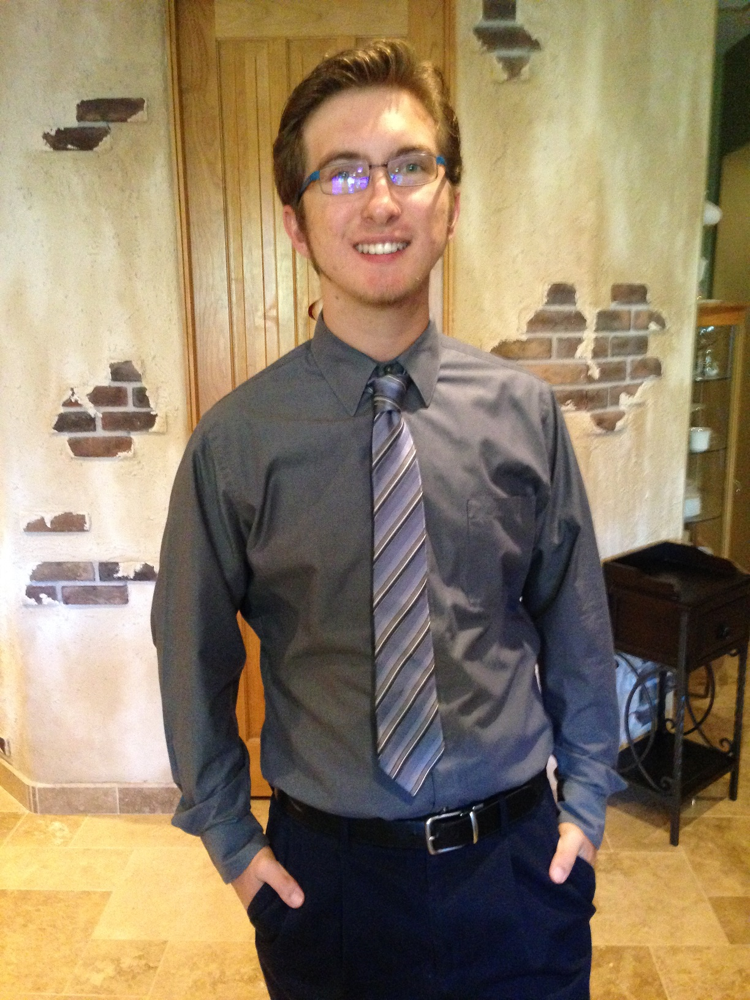

About me

I am Nick Baker, a student of U of A's Web Development Boot Camp. I am also a full-time UX Designer at U-Haul. Outside of work and class, I hang out with friends, listen to and create music, contemplate, and watch YouTube videos.
My favorite kind of music is metal, rock, and jazz fusion. My favorite sub-genres of metal are thrash, metalcore, deathcore, and death metal. Metal fulfills inexplicable existential needs.